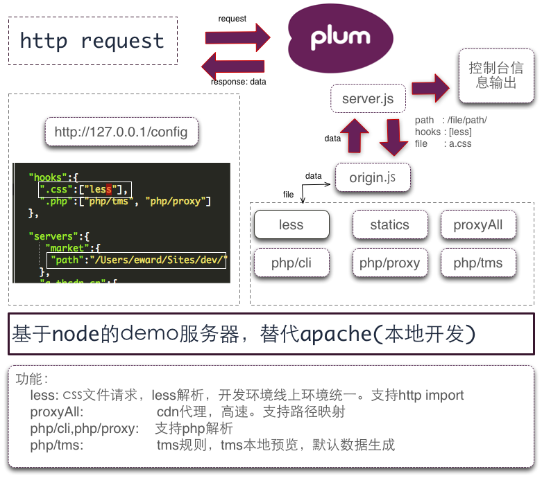

简介·about
Plum是使用node搭建服务器，用于本地开发过程中，替代apache。Plum本身是nodejs开发工 具，可以方便的自行配置服务器解析规则。比如对css进行less解析，对静态文件做cdn代理， 模板的本地数据模拟。

上图是plum执行的基本过程。
规则与组·hook
plum中，规则是都某些文件解析的规则，使用nodejs实现。规则接受一个文件解析请求，如
果规则接受当前文件解析，则解析并返回数据，如果不接受，退出，交给下一个规则进行解
析，最终，如果没有任何其他规则接受的请求，都会使用statics规则，原样输出。
现在支持的规则，一共有如下几种：
-
statics静态文件规则，读取文件，输出内容 -
less查找less文件，返回编译结果 -
proxycdn代理规则，和ucool方式一致 -
proxyAll完全代理模式，所有请求从线上取，和statics或者less规则结合路由 map功能，实现局部代理功能 -
php/cli使用php命令行方式解析php -
php/proxy请求转发到php自带服务器，需要php5.4支持 -
php/tmstms规则，在php请求url后面加上参数?tms，使用tms预览模式解析， 0.3.6开始支持cms语法
规则配置和文件后缀关联，比如 ".css":["less"] ，表示css文件，使用hooks/less解
析。文件后缀可以设置组规则，比如"statics": ["proxyAll"]，statics定位在配置文件
顶层group之下：
"groups":{
"statics" : [".css",".js","imgs",".swf"],
"imgs" : [".png", ".gif", ".jpg", ".ico"]
}
在配置规则时，可以通过自定义组设置，组规则配置可以相互引用，statics组调用了imgs 组，statics组指代所有的静态文件资源。
规则配置作用域分三层，第一次全局默认配置，第二层与host关联，第三层和host下面一段 路径关联。
"hooks":{
".css":["less"],
".php":["php/tms", "php/proxy"]
},
"servers":{
"a.tbcdn.cn": {
"path":"/Users/eward/assets",
"hooks":{
"statics":["proxyAll"]
},
"maps":{
"/tmse/5137/assets/":{
"path" : "/Users/eward/Sites/dev/nongye/sdk/assets/",
"hooks":{
"statics" : ["statics"]
}
}
}
}
}
上面的代码中，第1行hooks规则，配置为全局规则配置。第8行，配置为第二层，域名
a.tbcdn.cn下的规则，第三层为域名之下的某个目录，第14行。作用域层级越高，执行优先
级越高，三级作用域主要为了处理cdn代理，第二层使用hooks/proxyAll，所有的请求从
服务器抓取，第三层配置目录映射，当请求为a.tbdcn.cn/tmse/5137/assets/foo.css，请
求会使用第三层规则。三层配置只在cdn代理需要，其他域名配置基本只需要使用全局配置
就行。
配置·config
配置文件放在plum根目录下，文件名server.json，plum会首先读取根目录外面一个文件
夹中读取配置，如果不存在，读取plum目录下的配置。为了方便后面的更新，请首先复制
一份配置文件到plum文件夹同级目录下。
配置通过http://127.0.0.1/config进行配置，直接修改配置文件也行。处理上面所说 的规则配置和文件分组配置外，其他还有配置如下：
| key | defalut | mean |
|---|---|---|
| dirIndex | ["index.html"] | 文件夹默认index文件 |
| www | "" | web默认目录 |
| debug | false | 开启调试模式,输出所有log信息 |
| logBasic | false | 开启基本信息输出，输出所有请求基本信息 |
| logHooks | [] | 输出特定hook请求信息 |
| logFiles | [{path: '', ext: []}] | 根据文件路径和后缀输出log信息 |
| bin | {php:"php"} |
cdn代理
在plum中，代理是通过多种规则实现的。和ucool之类的代理不一样的是，plum使用局部代
理。在ucool中，a.tbcdn.cn指向一个assets文件夹，请求到代理服务器，如果assets
目录中，有请求的文件，则使用代理，代理服务器中获取。plum在本地开启node服务器，
proxy规则和ucool实现原理一致。另外一种，更加有好的方式是，局部代理。局部代理，
只对某一个路径进行本地代理，其他全部从线上取。可以免去为a.tbcnd.cn代理单独设置一
个目录的工作，比如，项目路径为/apps/a/b/c/d/src/build/2012122/，使用proxy方式，
需要在assets目录下建立同样长的路径，而且，本地开发时候已经有一个工程assets的目
录了，这个用于demo开发，使用局部代理，只需要把demo开发中的assets路径和线上assets
路径配置映射map，还可以省去两个目录同步的工作。
当代理请求为daily地址时，代理会自动切换到daily服务器取数据。切换到预发，使用的是
url参数，通过在url请求中增加一个proxy=pre声明使用预发服务器。(注意：url参数是
加在引用css的html文档的请求，通过referer判断)，下面less编译参数同样原理。后面会
把预发控制放在配置文件中控制，在配置文件中更改可能更方便。
less规则
请求为<link href="foo/a.css">，less解析过程，首先判断foo/a.less文件是否存在，
如果存在，调用less模块，解析并且返回结果。
less解析过程，很可能会出现错误，plum中错误通过控制台log打印错误信息。为了能够方便 查看错误信息，可以在一个新标签打开css请求，这样就不会受到其他请求日志信息的干扰。
less解析，并不会每次写入到对应的css文件中，如果需要写入，请在请求的url中加上less
参数。css写入成功，可以在控制台中看到一条[less build success]的信息。
php/tms
tms规则主要用于tms本地预览，在0.3.6版本后开始支持cms标签。plum能够做到tms中面向 类容标签(不支持结构标签)的预览，不过，tms后面已经支持本地开发，预览，并且直接同 步线上，plum/tms规则，只用于老的tms规则维护与修改，如果新开发，请使用tms最新的 dpl。
注意：php/tms规则，判断规则是请求url中必须有url参数tms。比如，请求是：
http://market/a.php，如果需要用php/tms规则生成模拟数据，需要在url后面加上参
数：http://market/a.php?tms。此外，还有一个参数build用于声明执行build过程，
此过程，把文件中引用文件合并输出，并且生成文件同名，后缀为html的demo文件，用于
demo展示。
tms头尾模拟
tms开发中，通常只需要开发中间部分，头尾使用线上统一文件。plum中，通过一定html注
释，区分线上和本地状态，最后通过url参数，?build，生成线上文件。
<?php include 'common/head.php'; $isOnline = false; ?>
<link rel="stylesheet" href="index/css/index.css" />
<script charset="utf-8" src="index/js/p4plist.js"></script>
<!--head include('/home/admin/go/market/5135/__header.php');
$isOnline = true; head-->
<script type="text/javascript">
<?php if ($isOnline): ?>
<?php include 'index/js/p4plist.js'; ?>
<?php endif; ?>
</script>
<div class="content">
<?php include 'index/vnav.php'; ?>
</div>
<!--foot include('/home/admin/go/market/5135/__footer.php') foot-->
<script src="index/js/index.js"></script>
<?php include 'common/foot.php'; ?>
上面代码中，1-3行是本地开发的头部分，common/head.php文件是本地获取的，执行build
以后，4-5行中，<!--head会被替换为<?php标签结束和开始。所以$isOnline变量，
在线上是true，而本地开发中是false。通常情况下是无需这样区分的，只是本例是一个活动
页面，发布以后css和js需要一起引入到页面中。在开发中是单独请求，线上时使用
<?php include 'index/js/p4plist.js'; ?>会被把内容替换为index/js/p4plist.js
文件里面的内容。同样，php文件使用同样的方式引用(第8行)。当请求url参数有build
时，所有include|require|include_once|require_once引用的文件都会合并到一起，把
浏览器返回的字符串拷贝到tms编辑框中就行。
上面同步的过程还是非常郁闷的，不过，至少可以在本地开发了，最好的方式应该是，本地 开发，然后直接提交线上，新版tms已经实现上述功能。
默认数据规则
使用tms标签或者cms标签，plum会生成同文件名(后缀json)的数据文件，默认情况下生成 一份数据，可以自行修改默认数据。默认数据通过name识别位置，一个页面中，tms标签 的name一定不能重复，包括repeat和module标签，都不能重复(这两者传到tms会有问题)。
默认数据大致分为字符串、链接、图片三种，字符串默认都是string，链接默认都是
www.taobao.com，图片使用的是fed上一个图片自动生成工具，图片大小识别是通过
title描述中的[200x200]识别的，一定要如此注明图片大小，否则tms图片会有问题，
这样也方便运营填数据，在custom标签中，在fields的描述中识别，比如
fields:"a:img[200x200]:img"。
当tms标签中的key修改了以后，默认数据会自动合并原有的数据，删除不再存在的数据。不
过，如果修改的是row参数，生成的数据条数不会更改，这个如果需要，请自行删除对应
的数据，或者更改标签的name值。
log控制台
控制台显示实时信息，包括请求在服务端耗时，解析规则过程，和错误信息提示。提示消息 如下：
[Origin begin]: 1 files(guarantee.php) [Hook php/tms reject]: file /nongye/demo/guarantee.php(0). spend time:1 [Hook php/proxy receive]: file /nongye/demo/guarantee.php(0). spend time:2 [Hook php/proxy]: Get file /nongye/demo/guarantee.php(0). spend time:36 [Origin end]: spend time: 36ms
debug
log信息的控制，通过配置文件配置(127.0.0.1/config)。开启debug模式，才会出现上面
所有信息，[Origin begin]表示一个请求开始，到结束，显示总时间，下面是每个文件
请求过程，这里一共一个文件，开始经过php/tms规则，返回reject，拒绝处理，因为
php/tms规则，规定文件必须有url参数tms才接受处理，url参数用于区分tms请求，还是
普通php请求。拒绝操作以后，进入的是php/proxy处理，返回receive，接受处理。
logBasic
通常情况，无需打开debug模式，还有参数logBasic，显示请求基本信息，包括请求包涵
文件数，和请求总费时，也就是上面的第一行和最后一行信息。
logFiles & logHooks
这两个参数用于配置，符合条件的请求，输出log信息，用于手动过滤。分别从两个不同的
维度来配置，文件和规则。logFiles配置符合条件的文件名规则，logHooks配置，符合
条件的规则可以输出到控制台。